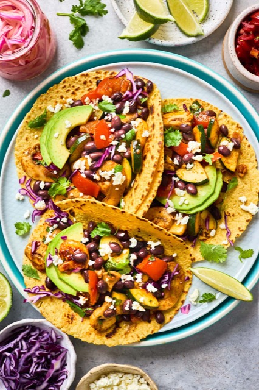

How to make a Simple College Taco

back to homepage
Ingredients
- Tortilla (corn or flour)
- Black beans
- Veggies
- Cheese
- Lime juice
- Cilantro
- Olive Oil
Method:
- In a large skillet, heat the oil over medium high heat. Add all of the veggies and cook until the vegetables are softened, stirring occasionally. Add in the garlic and cook for an additional minute.
- Stir in the cumin, chili powder, smoked paprika, oregano, and a little bit of water. The water will help everything come together.
- Carefully stir in the black beans, making sure you don’t smash them. Add the lime juice and cilantro. Season with salt and pepper, to taste.
- Now, it’s time to assemble the tacos! Place the filling in the center of warm corn tortillas and top with desired toppings!